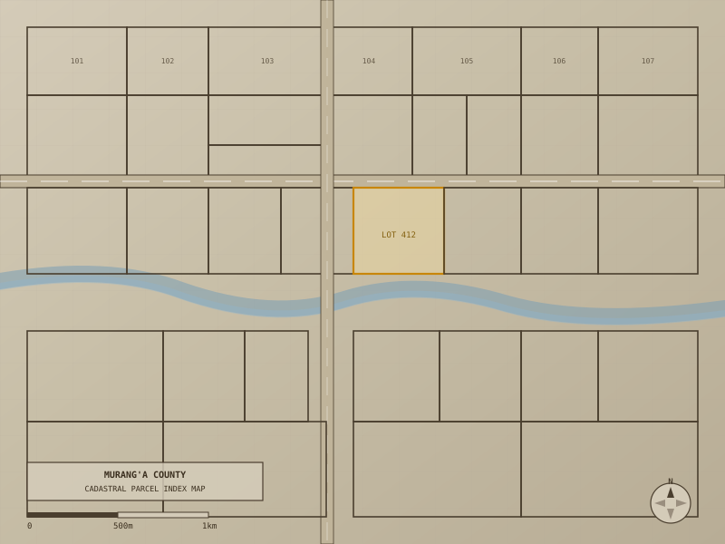

← All Work
Murangʼa County Cadastral
Cadastral and boundary survey work conducted in Murang'a County, Kenya, supporting physical development planning and land registration. Work involved field surveys, COGO computations, boundary demarcation, and production of survey drawings compliant with Kenya's Survey Act requirements.

Cadastral parcel index map: Murang'a County. Illustrative schematic; real parcel data withheld for privacy.
Scope of Work
- Boundary demarcation surveys for residential and agricultural parcels
- Traverse and COGO computations for parcel boundary definition
- Production of cadastral survey drawings for submission to the Ministry of Lands
- Integration of survey data with existing registered parcel databases
- Coordination with land owners, local administration, and county government
Privacy Note
This work involved official government land records and private client data. Specific parcel numbers, owner names, plot coordinates, and cadastral plan details are withheld in line with professional confidentiality obligations. Images shown are sanitised schematics only.
Equipment & Tools
- Total Station: field angle and distance measurements
- GNSS receiver: control point determination
- AutoCAD Civil 3D: survey drawing production
- ArcGIS Pro: spatial data management and mapping
- Kenya Survey Act (Cap. 299): regulatory framework